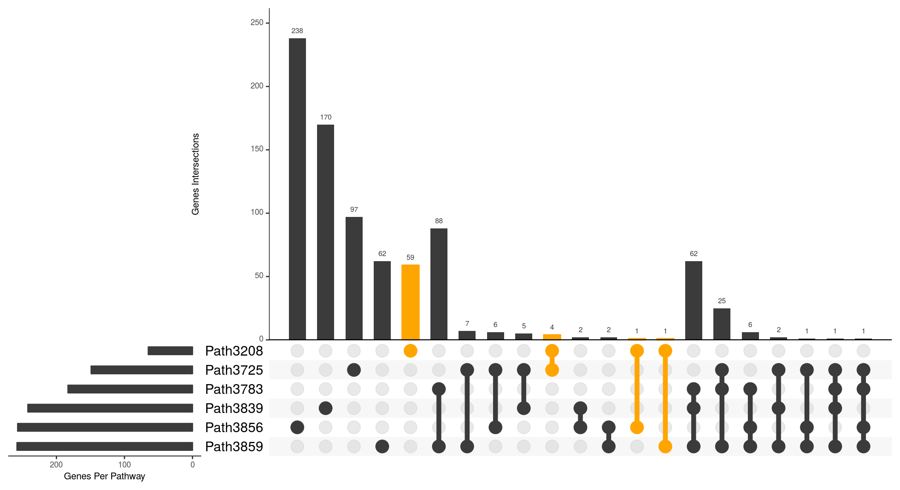
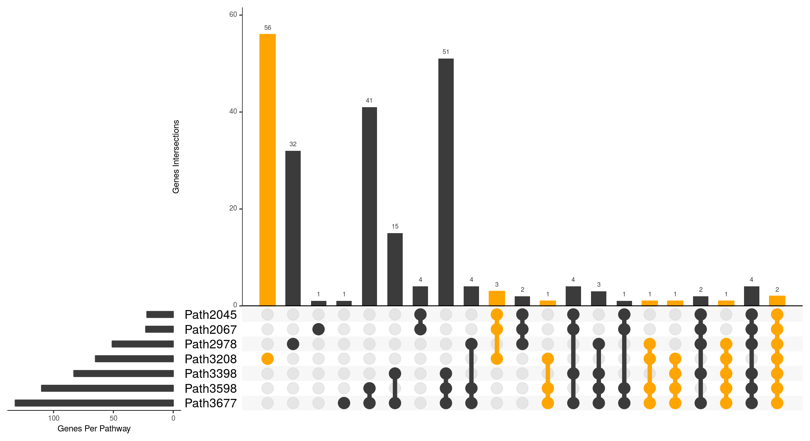
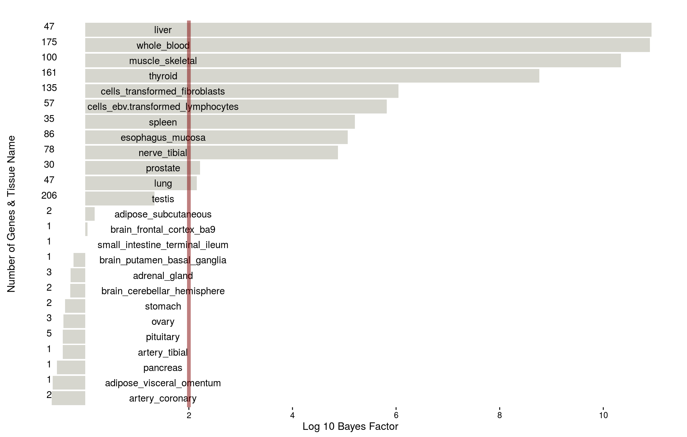

4.1 Pilot Analysis
Last updated: 2016-09-13
Code version: f965d5eb3b425d712c3e7c14c3704300c8299dbe
4.1.1 Fit the null model
4.1.2 Fit the enrichment model
4.1.2.1 Example 1: Top enrichments
Tabulate the top six enriched pathways for height.
| id | bf | name | source | database | numgene | numsnps | theta.mean | theta.sd | theta0.mean | theta0.sd |
|---|---|---|---|---|---|---|---|---|---|---|
| 3208 | 3.278166e+64 | Endochondral Ossification | wiki | BioSystems | 65 | 7573 | 0.7500000 | 0.0000008 | -2 | 0 |
| 3859 | 1.494140e+47 | Cellular responses to stress | reactome | PC | 258 | 16444 | 0.5000000 | 0.0000022 | -2 | 0 |
| 3856 | 7.837627e+44 | Metabolism of RNA | reactome | PC | 257 | 17586 | 0.5000000 | 0.0000000 | -2 | 0 |
| 3725 | 5.458711e+44 | TGF-beta Receptor Signaling Pathway | wiki | BioSystems | 149 | 13241 | 0.5059478 | 0.0380995 | -2 | 0 |
| 3783 | 1.223700e+44 | Cellular Senescence | reactome | PC | 183 | 10005 | 0.7471961 | 0.0263271 | -2 | 0 |
| 3839 | 7.048442e+42 | Chromatin modifying enzymes | reactome | BioSystems | 241 | 15037 | 0.5000000 | 0.0000077 | -2 | 0 |

Figure 4.1: Gene sharing of the top enriched pathways
4.1.2.2 Example 2: Hedgehog signaling pathway
Retrieve all the pathways whose names contain the word “Hedgehog”.
Tabulate the ones with the largest BFs.
| id | bf | name | source | database | numgene | numsnps | theta.mean | theta.sd | theta0.mean | theta0.sd |
|---|---|---|---|---|---|---|---|---|---|---|
| 3398 | 3.406931e+34 | Hedgehog ‘on’ state | reactome | BioSystems | 83 | 6283 | 0.7497261 | 0.0082701 | -2 | 0 |
| 3677 | 1.914504e+32 | Signaling by Hedgehog | reactome | BioSystems | 132 | 11887 | 0.5000000 | 0.0000100 | -2 | 0 |
| 2978 | 3.984276e+30 | Hedgehog signaling pathway | kegg | BioSystems | 50 | 4377 | 0.7499489 | 0.0035759 | -2 | 0 |
| 2067 | 6.256309e+23 | Signaling events mediated by the Hedgehog family | pid | PC | 23 | 2495 | 0.7540134 | 0.0314299 | -2 | 0 |
| 2045 | 4.661006e+23 | Signaling events mediated by the Hedgehog family | pid | BioSystems | 22 | 2490 | 0.7532245 | 0.0282210 | -2 | 0 |
| 3598 | 2.061373e+22 | Signaling by Hedgehog | reactome | PC | 110 | 9840 | 0.5000000 | 0.0000175 | -2 | 0 |

Figure 4.2: Gene sharing of Hedgehog pathways
4.1.2.3 Example 3: GTEx tissue specific eQTL

Figure 4.3: Enrichment of height associations in GTEx tissues